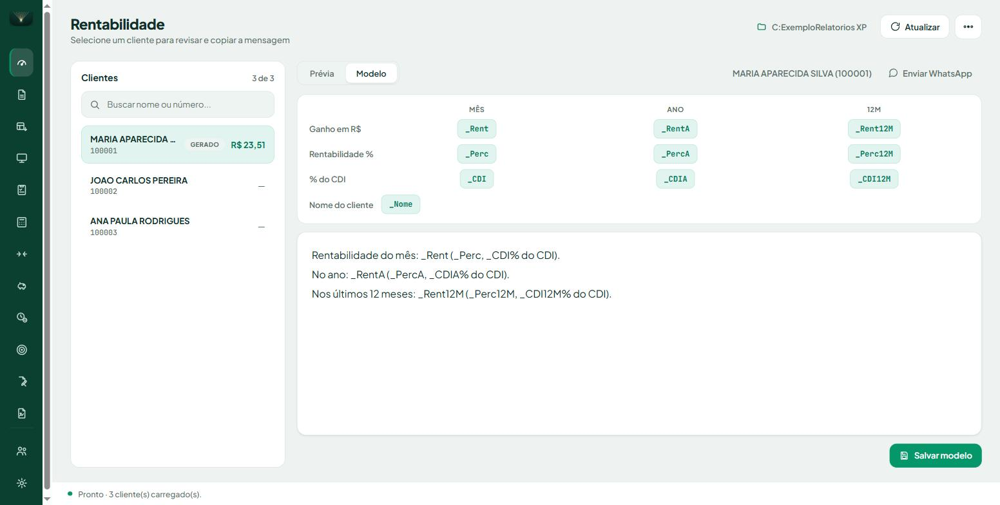
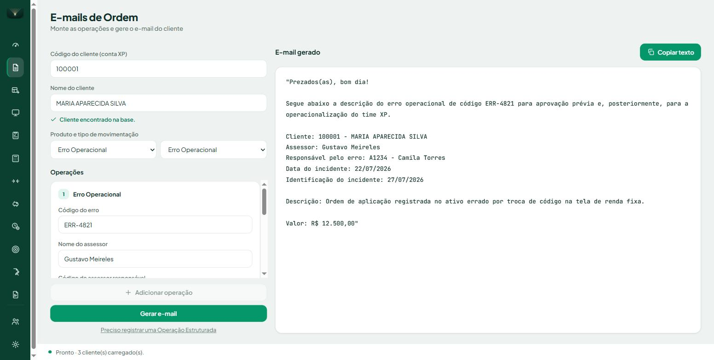
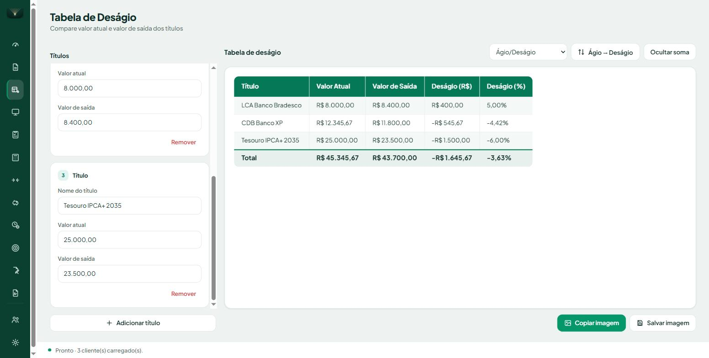
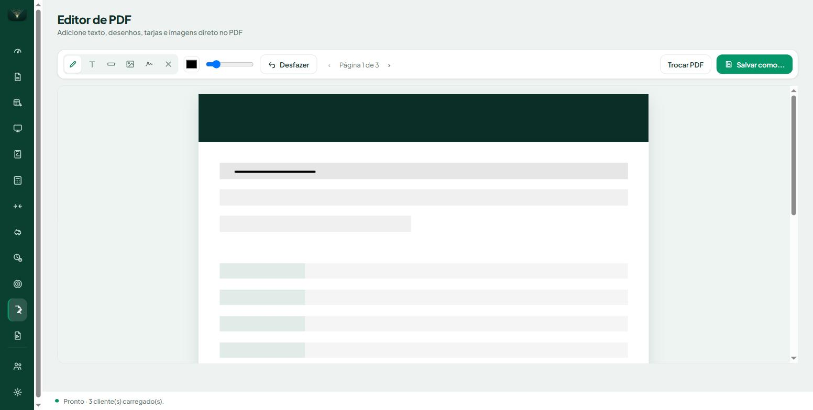
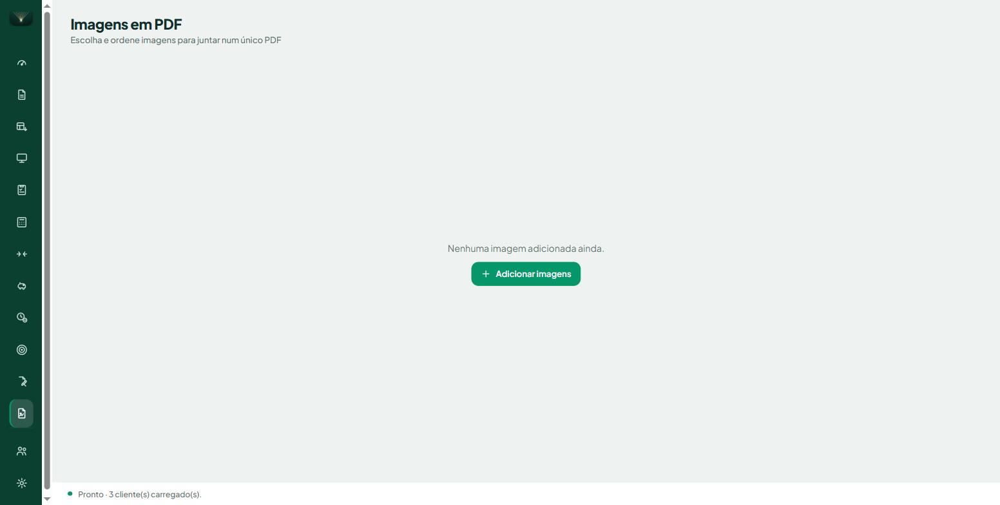
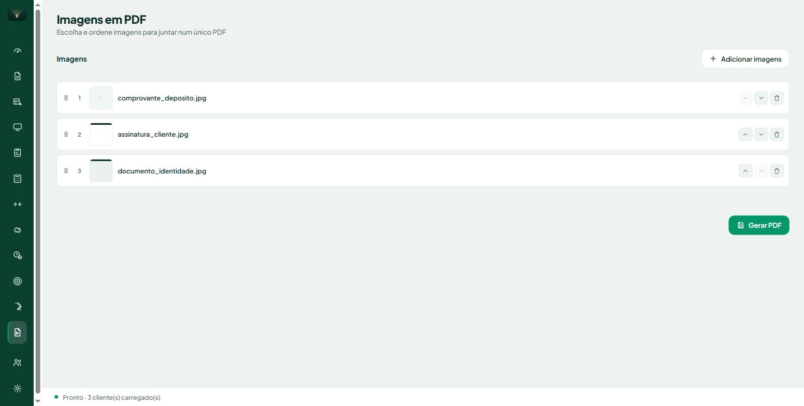
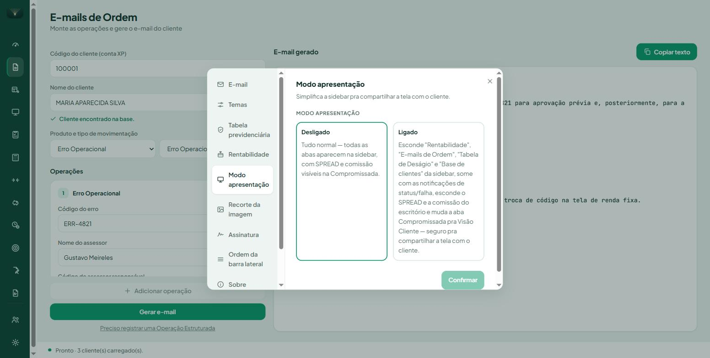

Ferramentas de Assessoria
Manual do Usuário
O app é um único arquivo, FerramentasAssessoria.exe — não tem instalador nem dependências. Copie para onde preferir (por exemplo, C:\\Ferramentas) e crie um atalho na área de trabalho, ou clique com o botão direito no ícone da barra de tarefas com o app aberto e escolha "Fixar na barra de tarefas".
O app trabalha com instância única: se você der dois cliques no .exe com ele já aberto, nenhuma segunda janela abre — a que já existe é trazida para a frente.
A base de clientes é o coração da integração entre as abas: é ela quem dá nome aos códigos de conta extraídos dos relatórios, preenche automaticamente o nome no gerador de e-mails e fornece o telefone usado pelo botão "Enviar WhatsApp".
codigo;nome;telefone 100001;CLIENTE EXEMPLO 01;11999990001 100002;CLIENTE EXEMPLO 02;11999990002
O separador (; ou ,) é detectado automaticamente, os nomes das colunas podem variar e vir em qualquer ordem, e o telefone aceita qualquer formato — sem DDI, o app assume Brasil (+55). O caminho fica salvo: nas próximas aberturas a base carrega sozinha.
Na aba Rentabilidade, clique em "Escolher pasta com os PDFs" e aponte para a pasta onde você baixa os relatórios XPerformance.

Todos os clientes da base aparecem, ordenados por patrimônio (maior primeiro). Cliente sem relatório na pasta (ou cujo PDF falhou na leitura) aparece em branco — assim você enxerga rapidamente quem falta. A busca filtra por nome ou código.
| Ação | O que faz |
|---|---|
| Copiar mensagem | Copia o texto pronto e marca o cliente como COPIADO. |
| Enviar WhatsApp | Abre o WhatsApp com a mensagem já preenchida — você revisa e aperta enviar lá. |
| Copiar imagem | Copia o gráfico de rentabilidade recortado do PDF (área ajustável em Configurações → Recorte da imagem). |
A aba "Modelo" mostra a legenda com os placeholders clicáveis: clique num selo para inserir no texto. Desde esta versão, além das colunas Mês e Ano, existe uma terceira coluna 12M — os últimos 12 meses corridos, lidos direto da linha "12M" do relatório XP (a mesma tabela de onde já vinham Mês e Ano).

| Placeholder | Substituído por |
|---|---|
| _Rent | Ganho em R$ no mês |
| _RentA | Ganho em R$ no ano |
| _Rent12M | Ganho em R$ nos últimos 12 meses |
| _Perc | Rentabilidade % no mês |
| _PercA | Rentabilidade % no ano |
| _Perc12M | Rentabilidade % nos últimos 12 meses |
| _CDI / _CDIA / _CDI12M | % do CDI no mês / ano / 12 meses |
| _Nome | Nome do cliente |
Modelos já personalizados continuam funcionando exatamente como antes — o placeholder de 12 meses só fica disponível para quem quiser inserir. Clique em "Salvar modelo" para gravar as mudanças (fica em modelo_mensagem.txt, dentro da pasta de relatórios).

Digite o código do cliente — o nome preenche sozinho se estiver na base. Escolha produto e tipo de operação; a lista cobre Renda Fixa, Tesouro Direto, Fundos, COE, Ofertas, Subscrição, Societárias, Clubes, Ações/Opções/Termo, Movimentação, Compromissadas, Carteira Automatizada, Resgate Prev e, desde esta versão, Erro Operacional.
Nos campos que só aceitam um valor monetário (Valor a ser aplicado, Preço, Valor limite etc.), agora não é preciso digitar "R$" — o app coloca sozinho na hora de montar o texto do e-mail. Basta digitar o número, por exemplo 1.000,00. Campos que aceitam outras opções além de um valor em reais (como "Quantidade" ou "Resgate Total") continuam como texto livre, sem prefixo automático.
"+ Adicionar operação" inclui mais de uma no mesmo e-mail (mesmo produto/tipo, regra de compliance do modo padronizado). Em Configurações dá para alternar para o modo livre, que permite misturar produtos diferentes num mesmo e-mail (comportamento antigo). "Gerar e-mail" monta o texto padronizado; revise e use "Copiar texto".

Adicione linhas com nome do título, valor atual e valor de saída — o deságio em R$ e % calcula sozinho, com prévia da tabela pronta para virar imagem ("Copiar imagem" ou "Salvar imagem").
Um seletor no cabeçalho da tabela escolhe o critério de ordenação:
| Critério | Ordena por |
|---|---|
| Nome | Ordem alfabética (A→Z por padrão) |
| Tamanho da posição | Valor Atual, do maior para o menor por padrão |
| Ágio/Deságio | % de ágio/deságio, do maior ágio para o maior deságio por padrão (comportamento original) |
O botão ao lado inverte a direção a qualquer momento (ex.: "Ágio → Deságio" vira "Deságio → Ágio"). Linhas sem valor completo sempre vão para o final, em qualquer critério.
O botão "Mostrar soma" acrescenta uma linha de total em negrito, embaixo da tabela, com a soma do Valor Atual, do Valor de Saída e do Deságio em R$ de todos os títulos — e o deságio % do total (ponderado pelo valor de cada título, não a média simples das porcentagens individuais). A linha de total entra na imagem exportada normalmente.
Ferramenta para anotar um PDF (ex.: um relatório ou contrato) diretamente na tela: desenhar, escrever, tarjar informação, colar imagens ou sua assinatura salva — sem precisar de outro programa.

| Ferramenta | O que faz |
|---|---|
| Caneta | Desenho livre — cor e espessura ajustáveis na barra de ferramentas. |
| Texto | Caixa de texto arrastável; clique fora ou no ✓ para aplicar na página. |
| Tarja branca | Cobre uma área retangular com branco sólido, para ocultar informação. |
| Imagem | Cola uma imagem do computador, redimensionável antes de aplicar. |
| Assinatura | Cola direto a assinatura salva em Configurações → Assinatura. |
| Marca X | Um “✕” preto fixo, do tamanho certo pra marcar um campo, no clique. |
Ao terminar, "Salvar como..." monta um PDF novo com todas as edições já achatadas nas páginas — o arquivo original nunca é alterado.
Ferramenta nova: transforma quantas imagens você quiser (fotos, comprovantes, prints, documentos escaneados) em um único arquivo PDF, uma imagem por página, na ordem que você escolher.


Nove cartões agrupados em três categorias, mais a Calculadora de Renda Fixa — tudo calcula em tempo real conforme os campos são preenchidos, sem precisar apertar nenhum botão "calcular". "Limpar" reseta todos os cartões de uma vez.
| Cartão | Pergunta que responde |
|---|---|
| Tempo para meta | Quanto tempo até atingir um valor objetivo, dado o aporte mensal e a rentabilidade. |
| Aporte necessário | Quanto aplicar por mês para atingir a meta no prazo desejado. |
| Rentabilidade necessária | Que rentabilidade buscar para atingir a meta com o aporte e prazo dados. |
| Cartão | Pergunta que responde |
|---|---|
| Rentabilidade futura | Quanto um valor renderá até uma data futura, numa taxa dada. |
| Rendimento futuro | Quanto de rendimento (R$) um valor gera até uma data futura. |
| Cobertura do FGC | Se um valor está dentro do limite garantido pelo FGC. |
Cálculo da Taxa Real (desconta a inflação), Composição de Taxas e Transformação de Taxas (mensal ↔ anual etc.) completam o grupo de conversões. A Calculadora de Renda Fixa monta um título completo (emissor, tipo CDB/LCI/LCA, datas pelo calendário ANBIMA, taxa contratada, valor aplicado) e destaca o valor líquido no vencimento, com o IR e o passo a passo do cálculo disponíveis num "Ver detalhes".
Compara dois títulos lado a lado (pré, pós % CDI, IPCA+, isentos ou não), mostrando qual rende mais líquido e destacando o vencedor métrica a métrica: alíquota de IR de cada um, valor líquido e rentabilidade líquida a.a./a.m.
Compara declaração Simplificada × Completa × Completa com 12% em PGBL a partir da renda tributável e deduções informadas. A tabela do IR usada (2022 ou 2026) é escolhida em Configurações → Tabela previdenciária.
Compara Conta Remunerada × CDB × Compromissada dia a dia entre duas datas, usando o calendário de dias úteis ANBIMA. O resultado tem um gráfico de rendimento por dia útil, o dia em que o CDB passa a valer mais a pena (considerando o IOF regressivo dos primeiros 30 dias) e uma tabela diária completa.
A partir da idade atual, idade desejada, expectativa de vida, renda mensal pretendida, aplicações já feitas e premissas de rentabilidade, calcula o aporte mensal necessário. O resultado compara dois cenários — Consumo de Patrimônio (com sucessão) e Viver de Renda (preservando o patrimônio) — cada um com seus próprios valores de aporte e renda projetada.
A janela de Configurações (engrenagem na barra lateral) tem dez abas.
Escolhe o modo do gerador de e-mails: padronizado (recomendado — um produto por e-mail, modelo específico, regra de compliance) ou livre (mistura produtos, comportamento antigo).
Tema claro/escuro, cor de destaque (Esmeralda, Teal, Aqua, Verde petróleo...) e fonte da interface.
Escolhe a tabela de IR (2022 ou 2026) usada pela Calculadora Previdenciária.
Liga o Modo Festas — troca a mensagem padrão por um modelo sazonal (ex.: Natal) para todos os clientes da base, com ou sem relatório processado.
Um único interruptor que substitui as antigas abas separadas "Visão" e "Modo apresentação".

| Opção | O que faz |
|---|---|
| Desligado | Tudo normal — todas as abas aparecem na sidebar, com SPREAD e comissão visíveis na Compromissada. |
| Ligado | Esconde Rentabilidade, E-mails de Ordem, Tabela de Deságio, Editor de PDF, Imagens em PDF e Base de clientes da sidebar; some com as notificações de status/falha; esconde o SPREAD e a comissão do escritório; muda a Compromissada pra visão cliente. |
Ajuste fino da área do gráfico copiada pelo "Copiar imagem" da aba Rentabilidade, com prévia sobre um relatório real. "Restaurar padrão" volta ao recorte original.
Cadastra uma ou mais imagens de assinatura; a marcada como ativa é a que o botão "Assinatura" do Editor de PDF cola na página.
Arraste para reordenar as ferramentas na barra lateral, ou use o botão "-" para esconder alguma.
Versão instalada e informações de build.
Lista os PDFs que não puderam ser lidos na última varredura, com o motivo exato de cada falha.
| Sintoma | Causa / solução |
|---|---|
| "Aplicativo não reconhecido" ao abrir | SmartScreen para apps sem assinatura — "Mais informações" → "Executar assim mesmo" (só na 1ª vez) |
| Cliente em branco na lista | Não há PDF daquela conta na pasta, ou o PDF veio quebrado da XP (confira em Configurações → Arquivos com falha) |
| Primeira abertura numa máquina demora alguns segundos | O motor de PDF compila na primeira vez e fica em cache — as próximas são rápidas |
| "Enviar WhatsApp" reclama de telefone | O cliente não tem telefone na base de clientes — adicione a coluna e recarregue a base |
| Não consigo exportar o CSV | O arquivo está aberto no Excel — feche e exporte de novo |
| Quero recomeçar do zero numa pasta | Botão "Limpar" (ou apague o rentabilidades.db da pasta) |
| O quê | Onde |
|---|---|
| Preferências | %APPDATA%\RentabilidadeXP\config.json |
| Dados extraídos dos relatórios | rentabilidades.db (dentro da pasta de PDFs) |
| Modelo de mensagem | modelo_mensagem.txt (dentro da pasta de PDFs) |
| Log | %LOCALAPPDATA%\RentabilidadeXP\app.log |